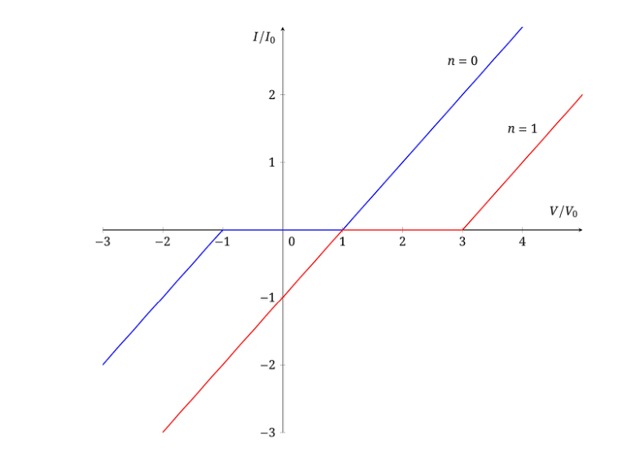
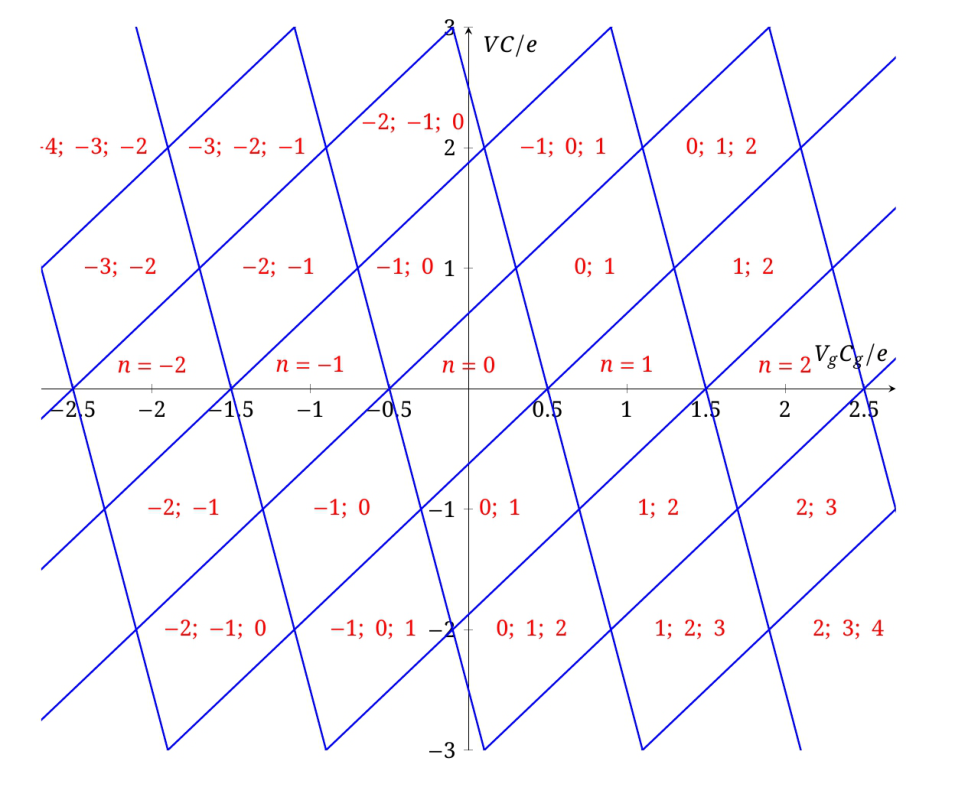

A1. 축전기 에너지 공식에 따라
$$W = \frac{(ne)^2}{2C}\quad\Rightarrow\quad\Delta W = \frac{e^2}{2C}\cdot\left((n+1)^2 - n^2\right).$$A2. 축전기 극판들의 전하의 합은 섬 위의 전자 수 $n$으로 정해진다. 축전기들 양단 전압의 합은 전압원으로 정해진다. 전하 보존 법칙과 전압 강하의 합을 쓰면
$$\begin{cases}q_j - q_g = -ne,\\ V = \dfrac{q_j}{C_j} + \dfrac{q_g}{C_g}.\end{cases}$$$C = C_j + C_g$라 하면, 정리하여 요구된 식을 얻는다.
A3. 계의 전체 에너지는
$$W_n = \frac{q_g^2}{2C_g} + \frac{q_j^2}{2C_j} = \frac{VC_jC_g + n^2e^2}{2C}.$$섬 위의 전자 수가 $n\to n+1$로 바뀌면
$$W_{n+1} = \frac{q_g^2}{2C_g} + \frac{q_j^2}{2C_j} = \frac{VC_jC_g + (n+1)^2e^2}{2C}.$$에너지 증가량은 $\Delta W = W_{n+1} - W_n = \dfrac{e^2}{C}(n + 1/2)$이다.
편집자 주: 원문의 $W_n$ 식에서 첫 항은 $V^2C_jC_g$로 읽어야 차원이 맞는다. 이 항은 $n$에 의존하지 않으므로 $\Delta W$에는 영향이 없다.
A4. 전원이 한 일은 그 전압과 전원을 통과한 전하량의 곱과 같다. 전원을 통과한 전하량은 게이트 전하의 변화 $\Delta q_g$와 같으므로, 전원이 한 일은
$$A = V\Delta q_g.$$A2에 따라 $\Delta q_g = eC_g/C$이므로 전원이 한 일을 얻는다.
열 손실은 에너지 보존 법칙으로 정해진다.
$$Q = A - \Delta W,$$여기서 A2의 결과를 쓰면 답을 얻는다.
A5. 저항에서 나오는 열은 저항 양단의 전압과 그것을 통과한 전하의 곱과 같다.
$$Q = I_tR_te.$$A4의 $Q$ 식을 쓰면
$$I_t = \frac{VC_g - e(n + 1/2)}{CR_t}.$$터널링은 $Q = I_tR_te > 0$일 때, 즉 $V > \dfrac{e}{C_g}(n + 1/2)$일 때 가능하며, 이것이 $n$에 대한 조건이다.
A6. A2에서 얻은 게이트 전하의 식을 시간으로 미분하면
$$\dot q_g = \frac{C_g}{C}\frac{\Delta n}{\Delta t}e.$$$I = \dot q_g$, $I_t = \dfrac{\Delta n}{\Delta t}e$를 고려하면 답을 얻는다.
A7. 앞의 두 문항으로부터
$$I = \frac{C_g^2}{C^2R_t}\left(V - \frac{e}{C_g}(n + 1/2)\right)\quad\text{if}\quad V > \frac{e}{C_g}(n + 1/2).$$섬 위의 전자 수 $n$이 줄어드는 경우에 대해 같은 계산을 하면 음의 전류도 흐를 수 있다.
$$I = \frac{C_g^2}{C^2R_t}\left(V - \frac{e}{C_g}(n - 1/2)\right)\quad\text{if}\quad V < \frac{e}{C_g}(n - 1/2).$$이 구간 밖에서는 터널링이 불가능하므로 $I(V) = 0$이다. 요구된 그래프는 아래 그림과 같다.

B1. 축전기들의 전하의 합은 섬 위의 전하와 같다.
$$C_1(\varphi - V_1) + C_2(\varphi - V_2) + C_g(\varphi - V_g) = -ne.$$$V_1$, $V_2$의 식을 대입하면 답을 얻는다.
B2. 먼저 섬 위의 전자 수가 바뀔 때 축전기 극판 전하의 변화를 나타내자.
$$q_1 = C_1(\varphi - V_1) = \frac{C_1}{C}\left[(C_1 - C)V_1 + C_2V_2 + C_gV_g - ne\right],\qquad \Delta q_1 = -\frac{eC_1}{C}\Delta n.$$여기와 이후 Part B에서 $C = C_1 + C_2 + C_g$이다. 마찬가지로
$$\Delta q_2 = -\frac{eC_2}{C}\Delta n,\qquad \Delta q_g = -\frac{eC_g}{C}\Delta n.$$전원들이 한 일은 그것들을 통과한 전하로 정해진다. 터널링이 일어나는 가지에 대해서는 터널링 전하 자체의 이동 $q_t = -\Delta ne$도 고려해야 한다. 따라서 이 경우 전원들이 한 전체 일은
$$A = -V_1\Delta q_1 - V_2\Delta q_2 - V_g\Delta q_g + V_1q_t.$$전하의 식을 대입하면
$$A = \frac{e\Delta n}{C}\left[V_1(C_1 - C) + V_2C_2 + V_gC_g\right].$$$\Delta n = 1$과 $V_1$, $V_2$의 식을 고려하여 결과를 쓴다.
B3. 계의 전체 에너지
$$W_n = \frac{C_1}{2}(\varphi - V_1)^2 + \frac{C_2}{2}(\varphi - V_2)^2 + \frac{C_g}{2}(\varphi - V_g)^2$$에 섬 전위 $\varphi$의 식을 대입하여 정리하면
$$W_n = \frac{(ne)^2}{2C} + W_0$$이 되며, 여기서 $W_0$은 섬 위의 전자 수 $n$에 의존하지 않는 항이다. 그러면 전자 하나가 터널링할 때의 에너지 증가량은
$$\Delta W_n = \frac{e^2}{2C}\left((\Delta n)^2 + 2n\Delta n\right) = \frac{e^2}{C}\left(\frac{1}{2}\pm n\right),$$여기서 $+$ 부호는 섬 위의 전자 수가 늘어나는 경우에 해당한다. 나오는 열은 에너지 보존 법칙으로 정해진다.
$$Q = A - \Delta W_n = \pm\frac{e}{C}\left[V_1(C_1 - C) + V_2C_2 + V_gC_g - e(n\pm 1/2)\right].$$전자 수가 늘어나는 경우를 생각하면 답을 얻는다.
B4. $V_1$, $V_2$의 식을 고려하면 회로에서 나오는 열은
$$Q = \pm\frac{e}{C}\left[V_gC_g - V/2\,(C_g + 2C_2) - e(n\pm 1/2)\right],$$여기서 $+$ 부호는 여전히 섬 위의 전자 수가 늘어나는 경우이다. 위쪽 부호에 대해 부등식 $Q > 0$으로부터
B5. 섬에서 첫 번째 접합을 통해 전자가 터널링하는 경우
$$V > \frac{V_gC_g - e(n - 1/2)}{C_2 + C_g/2}.$$두 번째 접합을 통한 터널링의 경우에는 나오는 열의 식에서 $V\to -V$, $C_1\to C_2$로 바꾸어 다음 조건을 얻는다.
$$Q = \pm\frac{e}{C}\left[V_gC_g + V/2\,(C_g + 2C_2) - e(n\pm 1/2)\right] > 0.$$이로부터 섬으로의 터널링에 대해
$$V > -\frac{V_gC_g - e(n + 1/2)}{C_1 + C_g/2},$$섬에서 나가는 터널링에 대해
$$V < -\frac{V_gC_g - e(n - 1/2)}{C_1 + C_g/2}.$$따라서 $V$, $V_g$ 좌표에서 터널링이 가능한 영역들은 기울기 $k_1 = \dfrac{C_g}{C_2 + C_g/2}$와 $k_2 = -\dfrac{C_g}{C_1 + C_g/2}$인 두 직선족으로 나뉜다. 각 영역은 평행사변형을 이룬다. 가로축을 포함하는 평행사변형들은 하나의 평형 전자 수 $n$에 해당한다. 이 영역들이 쿨롱 봉쇄, 즉 트랜지스터에 전류가 흐를 수 없는 상태이다. 다른 영역에서는 저항이 유한해져 전류가 흐를 수 있다.

B6. 양의 전류는 두 번째 전극에서 섬으로, 다시 섬에서 첫 번째 전극으로 터널링하는 것에 해당한다. 이 두 과정을 생각하고 등식 $Q_\alpha = I_\alpha R_te$($\alpha = 1, 2$는 터널링 과정의 번호)를 쓰자.
$$\begin{cases}I_1R_te = \dfrac{e}{C}\left[V(C_1 + C_g/2) + V_gC_g - e(n + 1/2)\right],\\[2mm] I_2R_te = -\dfrac{e}{C}\left[-V(C_2 + C_g/2) + V_gC_g - e(n + 1 - 1/2)\right].\end{cases}$$두 접합을 지나는 전체 터널링 시간으로 정해지는 트랜지스터의 전체 전류는 $I = (I_1^{-1} + I_2^{-1})^{-1}$이다. $Q_g = V_gC_g - e\bar n$을 도입하자. 여기서 $\bar n = (n + (n+1))/2$는 섬 위의 평균 전자 수이다. 정리하면 의존성은 다음 꼴이 된다.
$$I(V, Q_g) = \frac{C^2V^2/4 - Q_g^2}{VC^2R_t}.$$특히 $n = 0$, $\bar n = 1/2$에 대해 요구된 의존성을 얻는다.
C1. 그래프에서 B5에서 얻은 “쿨롱 다이아몬드”가 뚜렷이 보인다. 주기 $\Delta V_g$를 재면 게이트 전기용량을, 최대 전압 $V_{\max}$를 재면 전체 전기용량을 구할 수 있다. 그래프에서 $\Delta V_g = 7~{\rm mV}$, $V_{\max} = 0.4~{\rm mV}$이다. 따라서 $C_g = e/\Delta V_g = 23~{\rm aF}$, $C = e/V_{\max} = 400~{\rm aF}$, $C_1 = C_2 = (C - C_g)/2 = 190~{\rm aF}$이다.
C2. 섬 위에 전자가 $n$개 있을 확률의 변화는, 이 확률을 늘리는 과정 $n+1\to n$과 $n-1\to n$, 그리고 줄이는 역과정과 관련된다.
C3. 앞 문항으로부터 임의의 $n$에 대해 다음이 성립한다.
$$p(n-1)\cdot\Gamma_{n-1\to n} - p(n)\cdot\Gamma_{n\to n-1} = p(n)\cdot\Gamma_{n\to n+1} - p(n+1)\cdot\Gamma_{n+1\to n}.$$$n_0$의 정의를 고려하면
$$p(n_0 - 1)\cdot\Gamma_{n_0-1\to n_0} = p(n_0)\cdot\Gamma_{n_0\to n_0-1}.$$이로부터 $n_0$보다 작은 모든 $n$에 대해
$$p(n-1)\cdot\Gamma_{n-1\to n} = p(n)\cdot\Gamma_{n\to n-1}$$이 성립한다. 실제로 이런 관계는 임의의 $n$에 대해 처음 등식의 좌변을 0으로 만든다. 따라서 $n$이 1만큼 다른 경우에 해당하는 우변도 0이 된다. 이로부터 답을 얻는다.
C4. 나오는 열의 식은 Part B에서 얻었으며 다음 꼴이다.
$$Q^{(i)}_{n\to n\pm 1} = \pm\frac{e}{C}\left[(-1)^iVC/2 + (V_gC_g - e/2) - e(n - 1/2\pm 1/2)\right].$$$|V|\ll e/C$, $|V_g - e/2C_g|\ll e/C_g$를 고려하면, 두 터널 접합 모두에서 $n > 0$일 때 전자 수 $n$을 늘리면 나오는 열이 음수가 되고 $|Q_{n\to n\pm 1}| > e^2/C\gg kT$이다. $n < 1$에서 $n$을 줄일 때도 같은 부등식이 성립한다. 따라서 주어진 조건에서 지수에 큰 양수가 나타나므로 분모의 1을 무시할 수 있다. 이로써 요구된 결과를 얻는다.
C5. C3의 결과를 쓰면
$$p(0)\cdot\Gamma_{0\to 1} = p(1)\cdot\Gamma_{1\to 0}.$$규격화 조건 $p(0) + p(1) = 1$을 고려하여 확률 $p(0)$과 $p(1)$을 나타낸다.
C6. 트랜지스터의 전류는 한 접합을 통한 터널링 횟수로 정해진다(다른 접합을 통한 터널링은 섬 위의 전자 수가 변하지 않도록 일어난다).
$$I = e\left(p(1)\cdot\Gamma^{(1)}_{1\to 0} - p(0)\cdot\Gamma^{(1)}_{0\to 1}\right) = -e\left(p(1)\cdot\Gamma^{(2)}_{1\to 0} - p(0)\cdot\Gamma^{(2)}_{0\to 1}\right).$$한 식에서 다른 식으로는 $p(0)\cdot\Gamma_{0\to 1} = p(1)\cdot\Gamma_{1\to 0}$을 이용해 쉽게 넘어갈 수 있다. 확률 $p(0)$, $p(1)$의 식을 대입하면 요구된 결과를 얻는다.